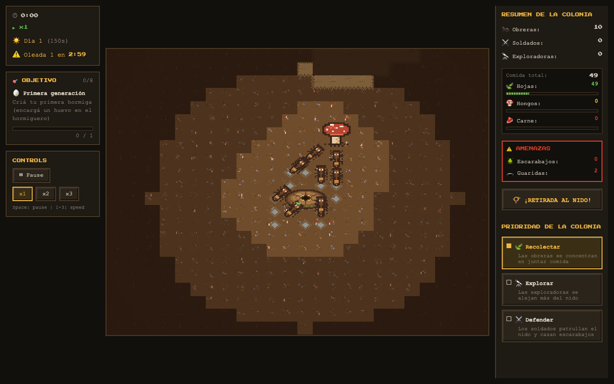
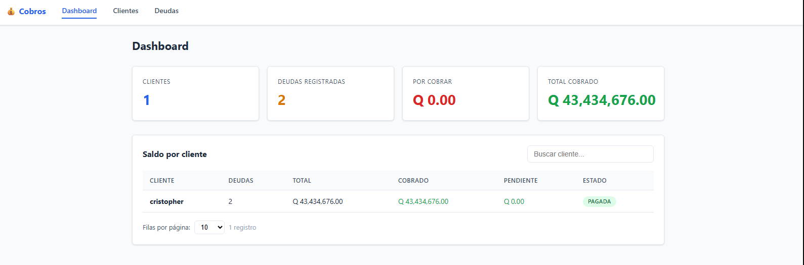

Backend
APIs y microservicios para transacciones bancarias en canales móvil y web.
- NestJS
- C# / .NET
- Node.js
- TypeScript
- REST APIs
- GraphQL
- WebSockets
- Express
- Microservicios
Backend Software Engineer
Backend confiable para sistemas
que no pueden fallar
Disponible para roles remotos · Guatemala · GMT-6
Agrupadas por la parte del sistema que resuelven: servicios, datos, plataforma e integración.
APIs y microservicios para transacciones bancarias en canales móvil y web.
Consultas, procedimientos y procesos programados sobre bases de datos transaccionales.
Contenedores, pipelines y despliegues sobre OpenShift.
Conexión entre sistemas internos y externos con autenticación centralizada.
También frontend: React · TypeScript · Vite · Zustand · Socket.io · WebRTC
Trabajo en producción en el sector financiero. Los diagramas son conceptuales, sin detalles internos.
Migración progresiva de un sistema monolítico hacia microservicios sin apagar el legacy. Un API Gateway con catálogo de rutas decide, agente por agente, si cada petición va al sistema legacy o al servicio nuevo. Sin asignación explícita, el destino es siempre legacy.
Parte de la modernización del banco: 18+ microservicios NestJS y .NET en producción.
NestJS · .NET · Oracle · OpenShift · MuleSoft · Azure DevOps
Las reversas de transacciones distribuidas quedaban inconsistentes cuando un paso fallaba o no respondía a tiempo. Diagnostiqué la cadena NestJS → MuleSoft → Oracle e implementé una saga con orquestador que maneja timeouts, estados y compensaciones para mantener la consistencia de cada transacción financiera.
NestJS · MuleSoft · Oracle
Si un paso falla o expira, se compensan los pasos anteriores.
API para generar links de cobro y códigos QR que se pagan desde una billetera digital. Diseñé el modelo de datos y la confirmación directa desde la billetera, separando cuenta de abono y cuenta de cargo, para que cada cobro quede trazable a su origen. La confirmación llega por webhook y la conciliación se hace con archivos por SFTP.
NestJS · Oracle · OpenShift · TypeScript · REST · Webhooks · SFTP
Un proceso contable de Agentes Bancarios dependía de ejecución manual diaria. Lo automaticé con un Oracle Job que ejecuta un procedimiento almacenado encargado de generar las líneas contables; hoy el proceso queda en una revisión operativa diaria.
Oracle · PL/SQL · Stored Procedures
Migración de WildFly a Quarkus en OpenShift para un banco con miles de usuarios activos. Redirects de URLs legacy, guías de rollback y documentación. Resultado: cero downtime, cero tickets.
Keycloak · OpenShift · HAProxy · OAuth 2.0 · Quarkus
Fuera del banco, diseño y construyo productos propios de principio a fin.
Simulador de gestión de una colonia: las obreras recolectan, las exploradoras abren rutas y las soldados defienden el nido de las oleadas. Motor propio sobre canvas con arquitectura ECS, ciclo día/noche, excavación de túneles e IA distinta por rol. Sin librería de juego: el game loop, el renderer y el atlas de sprites son míos.

Sistema de cobros local empaquetado en un solo .exe de 14MB. Gestión de clientes, registro de deudas, procesamiento de pagos y generación de reportes PDF/Excel. Arquitectura hexagonal en Go, frontend React embebido y SQLite — sin instalar nada, solo ejecutar.

Principios que aplico al diseñar y operar servicios en producción.
Diseño pensando en fallos: cada llamada externa puede tardar, fallar o repetirse.
Un servicio en producción tiene que poder explicar qué le pasó.
Prefiero evolucionar un sistema por partes antes que reescribirlo de golpe.
Coordino con QA y stakeholders para entregar cambios verificables, y dejo documentación clara para quienes mantienen el sistema.
De proyectos independientes a sistemas bancarios en producción.
Construyamos sistemas confiables.
Busco roles remotos internacionales de tiempo completo en ingeniería backend. Trabajo desde Guatemala (GMT-6) y puedo conversar con reclutadores y líderes de ingeniería.
También disponible para proyectos freelance puntuales: APIs y microservicios, auth y seguridad, optimización de bases de datos.
~$ cat contact.txt